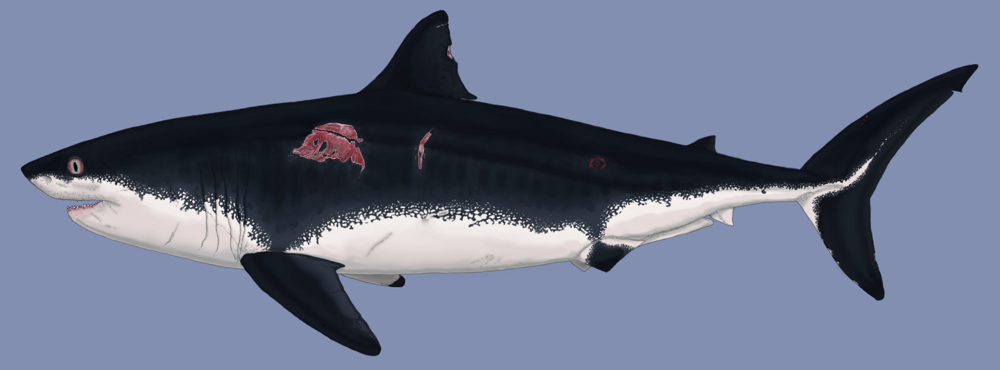

.jpg)
Resum Ràpid
🌍 Hàbitat i Època
El Mosasaurus va aparèixer en l'últim acte de l'era dels dinosaures, durant el Maastrichtià (fa entre 70 i 66 milions d'anys). A diferència d'altres depredadors que estaven en declivi, ell es trobava en plena expansió en el moment de l'impacte de l'asteroide.
Domini Global: La seva presència no era local; els seus fòssils han aparegut des de les costes europees (com els Països Baixos) fins a Amèrica del Nord i, sorprenentment, l'Antàrtida. Això suggereix una capacitat d'adaptació tèrmica i una mobilitat oceànica sense precedents.
L'Ecosistema Costaner: Preferia els mars poc profunds i les zones costaneres, on la biodiversitat era màxima. Actuava com un regulador de l'ecosistema, alimentant-se de tot el que es movia: des de grans peixos i amonits fins a altres rèptils marins.
🧬 L'Anatomia de l'Èxit
L'èxit del Mosasaurus no va ser casualitat, sinó el resultat d'una anatomia optimitzada per a la caça d'emboscada i la potència bruta:
La Trampa del Paladar (Dents Pterigoides): La seva boca era una eina de disseny letal. A més de les mandíbules principals, posseïa un segon joc de dents al paladar. Aquesta estructura no servia per mastegar, sinó per ancorar la presa. Un cop el Mosasaurus tancava la boca, qualsevol intent d'escapar només empenyia la víctima més endins de la gola.
Locomoció i Hidrodinàmica: Durant anys es va creure que nedaven de forma ondulant com les serps, però les troballes recents confirmen una cua lobulada similar a la dels taurons. Aquesta aleta caudal li permetia fer arrencades explosives, essencials per sorprendre preses ràpides en distàncies curtes.
Sensorialitat Especialitzada: Tot i tenir una visió binocular limitada, el Mosasaurus "olorava" el seu entorn amb precisió. Utilitzava l'òrgan de Jacobson per analitzar partícules químiques a l'aigua, una herència directa dels seus avantpassats escatosos que li permetia detectar sang o rastres a grans distàncies, fins i tot en aigües tèrboles.
🏺 L'Inici de la Paleontologia
La història del Mosasaurus és també la història de la mateixa paleontologia. El seu descobriment l'any 1764 a les mines de Maastricht va sacsejar els fonaments de la ciència d'aquella època.
En un moment en què el concepte d'"extinció" encara no s'acceptava plenament, la troballa d'aquest crani gegant va generar un caos intel·lectual. Es va confondre amb un cocodril i fins i tot amb una balena. No va ser fins al 1822 que es va establir la seva veritable naturalesa.
Aquest animal va ser, de fet, un dels primers a demostrar al món que havien existit criatures gegantines que ja no caminaven (ni nedaven) sobre la Terra, obrint el camí per a la comprensió de la història de la vida al nostre planeta.
🧬 Un Llinatge Fascinant
L'aspecte més sorprenent del Mosasaurus és el seu llinatge. Tot i la seva mida colossal, que pot recordar a les balenes modernes, no té cap parentiu biològic amb els mamífers marins.
Evolutivament, és un rèptil escatós, un cosí proper dels actuals Varans (com el Dragó de Komodo) i de les serps. Aquesta relació és tan estreta que comparteixen trets anatòmics únics, com la llengua bífida i la forma en què les seves mandíbules es poden expandir.
Representa un cas extrem de convergència evolutiva: un grup de llangardaixos terrestres que, pressionats per la competència o atrets per l'abundància de preses, van allargar els seus cossos, van transformar les potes en aletes i van acabar esdevenint els monarques absoluts dels oceans del Cretaci.
⚔️ El Duel de Titans: Mosasaurus vs. Cretoxyrhina

Recreació del Cretoxyrhina, conegut com el "Tauró Ginsu".
L'oceà del Cretaci va ser l'escenari d'una de les rivalitats més ferotges de la prehistòria: la lluita entre el Cretoxyrhina i el llinatge dels Mosasaures.
Mentre que el tauró era un mestre de l'agilitat i la velocitat, el Mosasaurus representava la força bruta i la resistència. En els enfrontaments directes, la mida era el factor decisiu: un Mosasaurus adult no només podia repel·lir els atacs del tauró, sinó que sovint el convertia en la seva presa.
S'han trobat proves fòssils que confirmen que els mosasaures s'alimentaven habitualment de taurons joves, desplaçant-los progressivament dels seus nínxols de caça fins a convertir-se en els amos absoluts de la cadena alimentària oceànica.
🎬 Presència a Jurassic World: Rebirth
Representació del Mosasaurus en l'ecosistema de 'Rebirth'.
A la nova era de Jurassic World: Rebirth, el Mosasaurus deixa de ser una atracció de parc per convertir-se en un element clau de l'ecologia global. La pel·lícula explora com aquest gegant habita en enclavaments tropicals aïllats, sent un dels pocs organismes que posseeix la clau genètica per a nous avenços mèdics en la trama.
Tot i que el disseny cinematogràfic manté la seva escala colossal per emfatitzar la majestuositat del "Rei de l'Oceà", Rebirth aprofundeix en la seva naturalesa territorial. Científicament, la seva anatomia a la pantalla es distancia del registre fòssil en favor de l'espectacle, ja que un Mosasaurus real tindria un cos més estilitzat, menys musculat i una pell suau optimitzada per a la caça sigil·losa en aigües profundes.
💡 Anècdotes i Comportament
Naixement al Mar: El Misteri dels Vivípars
A diferència de molts altres rèptils que han de tornar a terra ferma per pondre ous, el Mosasaurus va trencar definitivament el vincle amb la terra. Gràcies a troballes de fòssils de cries de molt curta edat en mar obert, sabem que eren vivípars.
Això significa que donaven a llum a les seves cries directament a l'aigua, totalment formades i preparades per nedar. Aquesta adaptació els permetia viure tota la seva vida en alta mar, eliminant la vulnerabilitat que suposava haver de sortir a les platges a niar, on serien preses fàcils.
Canibalisme: L'Instint més Salvatge
La vida d'un Mosasaurus no només era perillosa per les preses externes, sinó també pels seus propis congèneres. L'estudi de nombrosos cranis fòssils ha revelat marques de mossegades i ferides que encaixen perfectament amb la dentadura d'altres exemplars de la mateixa espècie.
Aquestes marques suggereixen que mantenien lluites territorials ferotges o combats per la dominació sexual. En alguns casos, l'evidència va més enllà: la presència de restes de mosasaures petits dins de l'estómac de parents més grans confirma que el canibalisme era una pràctica real quan l'aliment escassejava o per eliminar competència.
📚 REFERÈNCIES BIBLIOGRÀFIQUES
- Marcos Rodríguez, P. (2022). Historia de los Mosasaurios.
- Lindgren, J. et al. (2013). Soft tissue preservation in a fossil marine lizard with a bilobed tail fin. Nature Communications.
- Everhart, M. J. (2017). Oceans of Kansas: A Natural History of the Western Interior Sea. Indiana University Press.
- Polcyn, M. J. et al. (2014). The origin and early evolution of Mosasauroidea. Netherlands Journal of Geosciences.